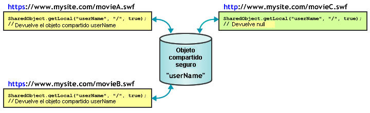

| Paquete | flash.net |
| Clase | public class SharedObject |
| Herencia | SharedObject |
| Versión del lenguaje: | ActionScript 3.0 |
| Versiones de motor de ejecución: | AIR 1.0, Flash Player 9, Flash Lite 4 |
Los objetos compartidos permiten realizar lo siguiente:
-
Mantener la persistencia local. Es la forma más sencilla de utilizar un objeto compartido y no requiere Flash Media Server. Por ejemplo, se puede llamar a
SharedObject.getLocal()para crear un objeto compartido en una aplicación como, por ejemplo, una calculadora con memoria. Cuando el usuario cierra la calculadora, Flash Player guarda el último valor en un objeto compartido del equipo del usuario. La próxima vez que se ejecute la calculadora, contendrá los valores anteriores. Por el contrario, si establece las propiedades del objeto compartido comonullantes de cerrar la aplicación de la calculadora, la próxima vez que la ejecute se abrirá sin los valores. Otro ejemplo de mantenimiento de persistencia local es realizar un seguimiento de las preferencias de los usuarios o de otros datos de un sitio web complejo, como el registro de los artículos que el usuario lee en un sitio de noticias. El registro de esta información le permitiría mostrar de forma distinta los artículos que ya ha leído y los que no ha leído. Si se almacena esta información en el equipo del usuario, se reduce la carga del servidor. -
Almacenar y compartir datos en Flash Media Server. Un objeto compartido puede almacenar datos en el servidor para que puedan recuperarlos otros clientes. Por ejemplo, llame a
SharedObject.getRemote()para crear un objeto compartido remoto, como una lista de teléfonos, que sea persistente en el servidor. Cada vez que un cliente realice cambios en el objeto compartido, los datos revisados estarán disponibles para todos los clientes conectados en ese momento al objeto o que lo harán más tarde. Si el objeto también es persistente localmente, y un cliente modifica los datos mientras no está conectado al servidor, los datos se copian en el objeto compartido remoto la próxima vez que el cliente se conecte al objeto. - Compartir datos en tiempo real. Un objeto compartido puede compartir datos con varios clientes en tiempo real. Por ejemplo, se puede abrir un objeto compartido remoto que almacene una lista de los usuarios conectados a una sala de chat que esté visible para todos los clientes conectados al objeto. Cuando el usuario entra o sale de la sala de chat, el objeto se actualiza y todos los clientes conectados a él podrán ver la lista revisada de los usuarios del chat.
Para crear un objeto compartido local, llame a SharedObject.getLocal(). Para crear un objeto compartido remoto, llame a SharedObject.getRemote().
Cuando se cierra la aplicación, a los objetos compartidos se les aplica el método flush, es decir, se graban en un disco. También se puede llamar al método flush() para grabar explícitamente datos en un disco.
Consideraciones relativas al espacio del disco local. Los objetos compartidos locales tienen limitaciones que es importante tener en cuenta durante el diseño de las aplicaciones. En ocasiones es posible que no se permita a los archivos SWF escribir objetos compartidos locales y algunas veces los datos almacenados en estos objetos pueden eliminarse sin que se sepa. Los usuarios de Flash Player pueden gestionar el espacio de disco disponible para dominios individuales o para todos los dominios. Si los usuarios reducen el espacio en disco disponible, es posible que se eliminen algunos objetos compartidos locales. Los usuarios de Flash Player tienen también controles de confidencialidad para impedir que dominios de terceros (distintos de los de la barra de direcciones del navegador) lean o escriban objetos compartidos locales. Tenga en cuenta también que en Mac OS, desde AIR 3.3, la ubicación de los objetos locales compartidos ha cambiado, por lo que si actualiza al espacio de nombres 3.3, tal vez parezca que ha perdido objetos.
Nota: los archivos SWF que se guardan y ejecutan desde un equipo local, no desde un servidor remoto, pueden escribir siempre objetos compartidos de terceros en el disco. Para más información sobre los objetos compartidos de terceros, consulte el panel Configuración global de almacenamiento de la Ayuda de Flash Player.
Es aconsejable buscar errores relacionados con la cantidad de espacio en disco y los controles de privacidad del usuario. Realice estas comprobaciones cuando llame a getLocal() y a flush():
-
SharedObject.getLocal(): Flash Player emite una excepción cuando falla la llamada a este método, por ejemplo, cuando el usuario ha desactivado objetos compartidos de terceros y el dominio del SWF no coincide con el de la barra de direcciones del navegador. -
SharedObject.flush(): Flash Player emite una excepción cuando falla la llamada a este método. DevuelveSharedObjectFlushStatus.FLUSHEDsi se realiza correctamente. DevuelveSharedObjectFlushStatus.PENDINGsi se necesita espacio adicional de almacenamiento. Flash Player pide al usuario que permita un aumento del espacio de almacenamiento para guardar la información local. A partir de ahí, se distribuye el eventonetStatuscon un objeto de información que indica si la alineación se ha realizado correcta o incorrectamente.
Si su SWF intenta crear o modificar objetos compartidos locales, compruebe que tiene al menos 215 píxeles de ancho y 138 píxeles de alto (las dimensiones mínimas para mostrar el cuadro de diálogo que pide a los usuarios aumentar el límite de almacenamiento de objetos compartidos locales). Si su archivo SWF es más pequeño y necesita aumentar el límite de almacenamiento, SharedObject.flush() falla, devuelve SharedObjectFlushedStatus.PENDING y distribuye el evento netStatus.
Objetos compartidos remotos. Con Flash Media Server, puede crear y utilizar objetos compartidos remotos, que se comparten en tiempo real por todos los clientes conectados a la aplicación. Cuando un cliente cambia una propiedad de un objeto compartido remoto, la propiedad cambia para todos los clientes conectados. Los objetos compartidos remotos se pueden utilizar para sincronizar los clientes, por ejemplo, los usuarios de una partida entre varios jugadores.
Cada objeto remoto compartido tiene una propiedad data que es un objeto con propiedades que almacenan datos. Llame a setProperty() para cambiar una propiedad del objeto de datos. El servidor actualiza las propiedades, distribuye un evento sync y envía las propiedades de vuelta a los clientes conectados.
Puede elegir entre convertir los objetos compartidos remotos en persistentes en el cliente, en el servidor o en ambos. De forma predeterminada, Flash Player guarda localmente los objetos compartidos remotos persistentes hasta un tamaño de 100 K. Si intenta guardar un objeto de mayor tamaño, Flash Player muestra el cuadro de diálogo Almacenamiento local, que permite al usuario permitir o denegar el almacenamiento local para el objeto compartido. Asegúrese de que el tamaño del escenario sea de al menos 215 x 138 píxeles; éste es el tamaño mínimo que exige Flash para mostrar el cuadro de diálogo.
Si el usuario selecciona Permitir, el servidor guarda el objeto compartido y muestra un evento netStatus con una propiedad code de SharedObject.Flush.Success. Si el usuario selecciona Denegar, el servidor no guarda el objeto compartido y distribuye un evento netStatus con una propiedad code de SharedObject.Flush.Failed.
Elementos de API relacionados
 Ocultar propiedades públicas heredadas
Ocultar propiedades públicas heredadas Mostrar propiedades públicas heredadas
Mostrar propiedades públicas heredadas| Propiedad | Definido por | ||
|---|---|---|---|
| client : Object
Indica el objeto en el que se invocan los métodos callback. | SharedObject | ||
 | constructor : Object
Una referencia a la clase de objeto o función constructora para una instancia de objeto determinada. | Object | |
| data : Object [solo lectura]
Conjunto de atributos asignados a la propiedad data del objeto; estos atributos pueden compartirse y almacenarse. | SharedObject | ||
| defaultObjectEncoding : uint [estática]
La codificación predeterminada del objeto (versión de AMF) para todos los objetos compartidos locales creados en el archivo SWF. | SharedObject | ||
| fps : Number [solo escritura]
Especifica el número de veces por segundo que se envían al servidor los cambios realizados por el cliente en un objeto compartido. | SharedObject | ||
| objectEncoding : uint
La codificación del objeto (versión del AMF) para este objeto compartido. | SharedObject | ||
| preventBackup : Boolean [estática]
Especifica si se deben crear copias de seguridad de objetos compartidos locales en el servicio de copia de seguridad en la nube de iOS. | SharedObject | ||
| size : uint [solo lectura]
El tamaño actual del objeto compartido, expresado en bytes. | SharedObject | ||
| Método | Definido por | ||
|---|---|---|---|
| addEventListener(type:String, listener:Function, useCapture:Boolean = false, priority:int = 0, useWeakReference:Boolean = false):void
Registra un objeto de detector de eventos con un objeto EventDispatcher, de modo que el detector reciba la notificación de un evento. | EventDispatcher | |
En el caso de objetos compartidos locales, se purgan todos los datos y se elimina el objeto compartido del disco. | SharedObject | ||
Cierra la conexión entre un objeto compartido remoto y el servidor. | SharedObject | ||
Conecta a un objeto compartido remoto en un servidor a través de un objeto NetConnection especificado. | SharedObject | ||
|
Distribuye un evento en el flujo del evento. | EventDispatcher | |
Graba inmediatamente un objeto compartido persistente localmente en un archivo local. | SharedObject | ||
[estática]
Devuelve una referencia a un objeto compartido persistente localmente que sólo está disponible para el cliente actual. | SharedObject | ||
getRemote(name:String, remotePath:String = null, persistence:Object = false, secure:Boolean = false):SharedObject [estática]
Devuelve una referencia a un objeto compartido en Flash Media Server al que pueden acceder varios clientes. | SharedObject | ||
|
Comprueba si el objeto EventDispatcher tiene detectores registrados para un tipo concreto de evento. | EventDispatcher | |
|
Indica si un objeto tiene definida una propiedad especificada. | Object | |
|
Indica si hay una instancia de la clase Object en la cadena de prototipo del objeto especificado como parámetro. | Object | |
|
Indica si existe la propiedad especificada y si es enumerable. | Object | |
|
Elimina un detector del objeto EventDispatcher. | EventDispatcher | |
Difunde un mensaje a todos los clientes conectados a un objeto compartido remoto, incluido el cliente que envía el mensaje. | SharedObject | ||
Indica al servidor que ha cambiado el valor de una propiedad en el objeto compartido. | SharedObject | ||
Actualiza el valor de una propiedad de un objeto compartido e indica al servidor que el valor de la propiedad ha cambiado. | SharedObject | ||
|
Establece la disponibilidad de una propiedad dinámica para operaciones de bucle. | Object | |
|
Devuelve la representación de cadena de este objeto, con formato según las convenciones específicas de configuración regional. | Object | |
|
Devuelve la representación de cadena del objeto especificado. | Object | |
|
Devuelve el valor simple del objeto especificado. | Object | |
|
Comprueba si hay registrado un detector de eventos con este objeto EventDispatcher o con cualquiera de sus ascendientes para el tipo de evento concreto. | EventDispatcher | |
| Evento | Resumen | Definido por | ||
|---|---|---|---|---|
| [evento broadcast] Se distribuye cuando Flash Player o AIR pasan a estar activos. | EventDispatcher | ||
| Se distribuye cuando se emite una excepción de forma asíncrona, es decir, desde un código asíncrono nativo. | SharedObject | |||
| [evento broadcast] Se distribuye cuando Flash Player o de AIR pasan a estar inactivos. | EventDispatcher | ||
| Se distribuye cuando una instancia de SharedObject informa sobre su estado o situación de error. | SharedObject | |||
| Se distribuye cuando se ha actualizado un objeto compartido remoto en el servidor. | SharedObject | |||
client | propiedad |
client:Object| Versión del lenguaje: | ActionScript 3.0 |
| Versiones de motor de ejecución: | AIR 1.0, Flash Player 9, Flash Lite 4 |
Indica el objeto en el que se invocan los métodos callback. El objeto predeterminado es this. Se puede establecer la propiedad del cliente en otro objeto y los métodos callback se invocarán en dicho objeto.
Implementación
public function get client():Object public function set client(value:Object):voidEmite
TypeError — La propiedad client debe establecerse en un objeto que no tenga valor null.
|
data | propiedad |
data:Object [solo lectura] | Versión del lenguaje: | ActionScript 3.0 |
| Versiones de motor de ejecución: | AIR 1.0, Flash Player 9, Flash Lite 4 |
Conjunto de atributos asignados a la propiedad data del objeto; estos atributos pueden compartirse y almacenarse. Cada atributo puede ser un objeto de cualquier tipo de ActionScript o JavaScript (Array, Number, Boolean, ByteArray, XML, etc.). Por ejemplo, las siguientes líneas asignan valores a diversos aspectos de un objeto compartido:
var items_array:Array = new Array(101, 346, 483);
var currentUserIsAdmin:Boolean = true;
var currentUserName:String = "Ramona";
var my_so:SharedObject = SharedObject.getLocal("superfoo");
my_so.data.itemNumbers = items_array;
my_so.data.adminPrivileges = currentUserIsAdmin;
my_so.data.userName = currentUserName;
for (var prop in my_so.data) {
trace(prop+": "+my_so.data[prop]);
}
Todos los atributos de la propiedad data de un objeto compartido se guardan si el objeto es persistente, y el objeto compartido contiene la siguiente información:
userName: Ramona
adminPrivileges: true
itemNumbers: 101,346,483
Nota: no asigne valores directamente a la propiedad data de un objeto compartido, como en so.data = someValue; Flash no tiene en cuenta estas asignaciones.
Para eliminar atributos de objetos locales compartidos, utilice código como, por ejemplo, delete so.data.attributeName; la configuración de un atributo con el valor null o undefined para un objeto local compartido no elimina el atributo en cuestión.
Para crear valores private para un objeto compartido (los valores que sólo están disponibles para la instancia de cliente mientras el objeto se está utilizando no se almacenan con el objeto cuando se cierra), cree propiedades que no sean data con nombre para almacenarlos, como se muestra en el siguiente ejemplo:
var my_so:SharedObject = SharedObject.getLocal("superfoo");
my_so.favoriteColor = "blue";
my_so.favoriteNightClub = "The Bluenote Tavern";
my_so.favoriteSong = "My World is Blue";
for (var prop in my_so) {
trace(prop+": "+my_so[prop]);
}
El objeto compartido contiene los siguientes datos:
favoriteSong: My World is Blue
favoriteNightClub: The Bluenote Tavern
favoriteColor: blue
data: [object Object]
En los objetos compartidos remotos utilizados con un servidor, todos los atributos de la propiedad data están disponibles para todos los clientes conectados al objeto compartido y, si el objeto es persistente, se guardan todos los atributos. Si un cliente cambia el valor de un atributo, todos los clientes ven ahora el nuevo valor.
Implementación
public function get data():ObjectElementos de API relacionados
defaultObjectEncoding | propiedad |
defaultObjectEncoding:uint| Versión del lenguaje: | ActionScript 3.0 |
| Versiones de motor de ejecución: | AIR 1.0, Flash Player 9, Flash Lite 4 |
La codificación predeterminada del objeto (versión de AMF) para todos los objetos compartidos locales creados en el archivo SWF. Cuando se escriben los objetos compartidos locales en el disco, la propiedad SharedObject.defaultObjectEncoding indica qué versión de formato de mensaje de acción se debe utilizar: el formato ActionScript 3.0 (AMF3) o el formato ActionScript 1.0 ó 2.0 (AMF0).
Para más información sobre la codificación de objetos, incluida la diferencia entre la codificación de objetos compartidos locales y remotos, consulte la descripción de la propiedad objectEncoding.
El valor predeterminado de SharedObject.defaultObjectEncoding se establece para utilizar el formato ActionScript 3.0, AMF3. Si necesita escribir objetos compartidos locales legibles para archivos SWF de ActionScript 2.0 ó 1.0, establezca SharedObject.defaultObjectEncoding para que utilice el formato ActionScript 1.0 ó ActionScript 2.0, flash.net.ObjectEncoding.AMF0, al principio del script, antes de crear ningún objeto compartido local. Todos los objetos compartidos locales creados a partir de ese momento utilizarán la codificación AMF0 y podrán interactuar con el contenido más antiguo. No es posible cambiar el valor objectEncoding de los objetos compartidos locales existentes estableciendo SharedObject.defaultObjectEncoding tras crear los objetos compartidos locales.
Para establecer la codificación del objeto de uno en uno, y no para todos los objetos compartidos creados por el archivo SWF, establezca la propiedad objectEncoding del objeto compartido local.
Implementación
public static function get defaultObjectEncoding():uint public static function set defaultObjectEncoding(value:uint):voidElementos de API relacionados
fps | propiedad |
fps:Number [solo escritura] | Versión del lenguaje: | ActionScript 3.0 |
| Versiones de motor de ejecución: | AIR 1.0, Flash Player 9, Flash Lite 4 |
Especifica el número de veces por segundo que se envían al servidor los cambios realizados por el cliente en un objeto compartido.
Utilice este método cuando quiera controlar la cantidad de tráfico entre el cliente y el servidor. Por ejemplo, si la conexión entre el cliente y el servidor es relativamente lenta, fps se puede establecer en un valor relativamente bajo. Por el contrario, si el cliente está conectado a una aplicación multiusuario en la que el tiempo juega un papel importante, fps se puede establecer en un valor relativamente alto.
Al definir fps se activa un evento sync y se actualizan todos los cambios en el servidor. Si sólo quiere actualizar el servidor manualmente, defina fps como 0.
Los cambios se envían al servidor sólo cuando se ha distribuido el evento sync. Esto quiere decir que, si el tiempo de respuesta del servidor es lento, las actualizaciones se enviarán al servidor con menor frecuencia que el valor especificado en esta propiedad.
Implementación
public function set fps(value:Number):voidobjectEncoding | propiedad |
objectEncoding:uint| Versión del lenguaje: | ActionScript 3.0 |
| Versiones de motor de ejecución: | AIR 1.0, Flash Player 9, Flash Lite 4 |
La codificación del objeto (versión del AMF) para este objeto compartido. Cuando se escribe un objetos compartido local en el disco, la propiedad objectEncoding indica qué versión de formato de mensaje de acción se debe utilizar: el formato ActionScript 3.0 (AMF3) o el formato ActionScript 1.0 ó 2.0 (AMF0).
La codificación de objetos no se trata del mismo modo si el objeto compartido es local o remoto.
- Objetos compartidos locales. Se puede obtener o establecer el valor de la propiedad
objectEncodingpara objetos compartidos locales. El valor deobjectEncodingafecta al formato que se utiliza para escribir este archivo compartido local. Si necesita que el objeto compartido local sea legible en archivos SWF de ActionScript 2.0 ó 1.0, definaobjectEncodingcomoObjectEncoding.AMF0. Aunque la codificación de un objeto se establezca para escribir en AMF3, Flash Player sigue pudiendo leer objetos compartidos locales AMF0. Esto quiere decir que, si utiliza el valor predeterminado de esta propiedad,ObjectEncoding.AMF3, el archivo SWF podrá seguir leyendo objetos compartidos creados por archivos SWF de ActionScript 2.0 ó 1.0. - Objetos compartidos remotos. Si está conectado al servidor, un objeto compartido remoto hereda los parámetros de
objectEncodingde la instancia de NetConnection asociada (la instancia que se utiliza para conectar con el objeto compartido remoto). Si no está conectado al servidor, el objeto compartido remoto hereda los parámetros dedefaultObjectEncodingde la instancia de NetConnection asociada. Dado que el valor de la propiedadobjectEncodingde un objeto compartido remoto viene determinada por la instancia de NetConnection, esta propiedad es de sólo lectura para los objetos compartidos remotos.
Implementación
public function get objectEncoding():uint public function set objectEncoding(value:uint):voidEmite
ReferenceError — Ha intentado establecer el valor de la propiedad objectEncoding en un objeto compartido remoto. Esta propiedad es de sólo lectura para los objetos compartidos remotos, ya que su valor viene determinado por la instancia de NetConnection asociada.
|
Elementos de API relacionados
preventBackup | propiedad |
preventBackup:Boolean| Versión del lenguaje: | ActionScript 3.0 |
| Versiones de motor de ejecución: | AIR 3.7 |
Especifica si se deben crear copias de seguridad de objetos compartidos locales en el servicio de copia de seguridad en la nube de iOS.
Especifique true o false:
- true: impide la creación de copias de seguridad de objetos compartidos locales en el servicio de copia de seguridad en la nube de iOS.
- false (valor predeterminado): se crearán copias de seguridad de objetos compartidos locales en el servicio de copia de seguridad en la nube de iOS.
Esta propiedad solo se aplica a objetos compartidos locales y es únicamente para iOS.
Implementación
public static function get preventBackup():Boolean public static function set preventBackup(value:Boolean):voidsize | propiedad |
size:uint [solo lectura] | Versión del lenguaje: | ActionScript 3.0 |
| Versiones de motor de ejecución: | AIR 1.0, Flash Player 9, Flash Lite 4 |
El tamaño actual del objeto compartido, expresado en bytes.
Flash calcula el tamaño de un objeto compartido comprobando todas sus propiedades de datos; cuantas más propiedades de datos tenga el objeto, mayor será el tiempo necesario para estimar su tamaño. La estimación del tamaño de un objeto puede consumir bastante tiempo de proceso, por lo que es posible que prefiera evitar este método si no lo necesita por un motivo concreto.
Implementación
public function get size():uintEjemplo ( Cómo utilizar este ejemplo )
"thehobbit". Se añade una propiedad llamada username a la propiedad de los datos del objeto SharedObject. Posteriormente, se realiza un seguimiento de la propiedad size, que devuelve el valor indicado.
import flash.net.SharedObject;
// if these get copied or not
var mySo:SharedObject = SharedObject.getLocal("thehobbit");
mySo.data.username = "bilbobaggins";
trace(mySo.size); // 55
clear | () | método |
public function clear():void| Versión del lenguaje: | ActionScript 3.0 |
| Versiones de motor de ejecución: | AIR 1.0, Flash Player 9, Flash Lite 4 |
En el caso de objetos compartidos locales, se purgan todos los datos y se elimina el objeto compartido del disco. La referencia al objeto compartido sigue activa, pero las propiedades de sus datos se eliminan.
En el caso de objetos compartidos remotos utilizados con Flash Media Server, clear() desconecta el objeto y purga todos los datos. Si el objeto compartido es persistente localmente, este método también lo elimina del disco. La referencia al objeto compartido sigue activa, pero las propiedades de sus datos se eliminan.
Ejemplo ( Cómo utilizar este ejemplo )
hostName. Se añade una propiedad llamada username a la propiedad de los datos del objeto SharedObject. Finalmente se llama al método clear(), que limpia toda la información añadida al objeto de datos (en este caso, una única propiedad llamada username).
package {
import flash.net.SharedObject;
public class SharedObject_clear {
private var hostName:String = "yourDomain";
private var username:String = "yourUsername";
public function SharedObject_clear() {
var mySo:SharedObject = SharedObject.getLocal(hostName);
if(mySo.data.username == null) {
mySo.data.username = username;
trace("set: " + mySo.data.username); // yourUsername
}
else {
mySo.clear();
trace("cleared: " + mySo.data.username); // undefined
}
}
}
}
close | () | método |
public function close():void| Versión del lenguaje: | ActionScript 3.0 |
| Versiones de motor de ejecución: | AIR 1.0, Flash Player 9, Flash Lite 4 |
Cierra la conexión entre un objeto compartido remoto y el servidor. Si el objeto compartido remoto es persistente de forma local, el usuario puede realizar cambios en la copia local del objeto tras haber llamado a este método. Todos los cambios realizados en el objeto local se enviarán al servidor la próxima vez que el usuario se conecte al objeto compartido remoto.
connect | () | método |
public function connect(myConnection:NetConnection, params:String = null):void| Versión del lenguaje: | ActionScript 3.0 |
| Versiones de motor de ejecución: | AIR 1.0, Flash Player 9, Flash Lite 4 |
Conecta a un objeto compartido remoto en un servidor a través de un objeto NetConnection especificado. Utilice este método después de llamar a getRemote(). Si la conexión se realiza con éxito, se distribuye el evento sync.
Antes de intentar trabajar con un objeto compartido remoto, compruebe primero si hay errores utilizando una sentencia try..catch..finally. A continuación, detecte y gestione el evento sync antes de realizar modificaciones en el objeto compartido. Todos los cambios realizados localmente, antes de distribuir el evento sync, podrían perderse.
Llame al método connect() para conectarse a un objeto compartido remoto, por ejemplo:
var myRemoteSO:SharedObject = SharedObject.getRemote("mo", myNC.uri, false);
myRemoteSO.connect(myNC);
Parámetros
myConnection:NetConnection — Objeto NetConnection que utiliza el protocolo de mensajería en tiempo real (RTMP), como un objeto NetConnection utilizado para comunicarse con Flash Media Server.
| |
params:String (default = null) |
Emite
Error — Flash Player no ha podido conectarse con el objeto compartido remoto especificado. Compruebe que la instancia de NetConnection es válida y que está conectada. También que el objeto compartido remoto se ha creado correctamente en el servidor.
|
Elementos de API relacionados
flush | () | método |
public function flush(minDiskSpace:int = 0):String| Versión del lenguaje: | ActionScript 3.0 |
| Versiones de motor de ejecución: | AIR 1.0, Flash Player 9, Flash Lite 4 |
Graba inmediatamente un objeto compartido persistente localmente en un archivo local. Si no utiliza este método, Flash Player grabará el objeto compartido en un archivo cuando termine la sesión del objeto; es decir, cuando se cierre el archivo SWF, cuando se eliminen los datos innecesarios del objeto compartido porque ya no tiene ninguna referencia a él o cuando llame a SharedObject.clear() o SharedObject.close().
Si este método devuelve SharedObjectFlushStatus.PENDING, Flash Player mostrará un cuadro de diálogo en el que se pedirá al usuario que aumente el espacio en disco disponible para objetos de este dominio. Para permitir que crezca el espacio asignado al objeto compartido cuando vuelva a guardarse, lo que evita que se devuelva el valor PENDING, pase un valor para minDiskSpace. Cuando Flash Player intenta grabar el archivo, busca el número de bytes pasados a minDiskSpace, en lugar de buscar el espacio suficiente para guardar el objeto compartido con su tamaño actual.
Por ejemplo, si espera que un objeto compartido crezca hasta un tamaño máximo de 500 bytes, aunque es posible que su tamaño inicial sea muy inferior a éste, pase el valor 500 para minDiskSpace. Si Flash pide al usuario que asigne espacio del disco al objeto compartido, pide 500 bytes. Una vez que el usuario asigne la cantidad de espacio solicitada, Flash no tendrá que solicitar más espacio en posteriores intentos de almacenamiento del objeto (siempre y cuando su tamaño no supere 500 bytes).
Una vez que el usuario responde al cuadro de diálogo, se vuelve a llamar a este método. Se distribuye un evento netStatus con una propiedad code de SharedObject.Flush.Success o SharedObject.Flush.Failed.
Parámetros
minDiskSpace:int (default = 0) |
String — Los posibles valores son:
|
Emite
Error — Flash Player no puede escribir el objeto compartido en el disco. Es posible que se produzca este error si el usuario ha denegado permanentemente el almacenamiento de información local para los objetos de este dominio.
Nota: el contenido local siempre puede escribir en el disco objetos compartidos de dominios de terceros (distintos del que aparece en la barra de direcciones actual del navegador), aunque no esté admitida dicha operación. |
Elementos de API relacionados
Ejemplo ( Cómo utilizar este ejemplo )
hostName. Se añade una propiedad llamada username a la propiedad de los datos del objeto SharedObject. Se llama al método flush() y se comprueba para ver si devuelve pending o un valor booleano true o false. Se debe tener en cuenta que todas las instancias de SharedObject abiertas se alinearán automáticamente cuando se cierre la instancia de Flash Player.
package {
import flash.net.SharedObject;
public class SharedObject_flush {
private var hostName:String = "yourDomain";
private var username:String = "yourUsername";
public function SharedObject_flush() {
var mySo:SharedObject = SharedObject.getLocal(hostName);
mySo.data.username = username;
var flushResult:Object = mySo.flush();
trace("flushResult: " + flushResult);
trace(mySo.data.username); // yourUsername
}
}
}
getLocal | () | método |
public static function getLocal(name:String, localPath:String = null, secure:Boolean = false):SharedObject| Versión del lenguaje: | ActionScript 3.0 |
| Versiones de motor de ejecución: | AIR 1.0, Flash Player 9, Flash Lite 4 |
Devuelve una referencia a un objeto compartido persistente localmente que sólo está disponible para el cliente actual. Si el objeto compartido no existe ya, este método crea uno. Si alguno de los valores transferidos a getLocal() no son válidos o si la llamada produce un error, Flash Player emitirá una excepción.
El siguiente código muestra cómo asignar la referencia del objeto compartido devuelto a una variable:
var so:SharedObject = SharedObject.getLocal("savedData");
Nota: si el usuario ha optado por no permitir nunca el almacenamiento local para este dominio, el objeto no se guardará localmente aunque se especifique un valor para localPath. La excepción a esta regla es el contenido local. El contenido local siempre puede escribir en el disco objetos compartidos de dominios de terceros (distintos del que aparece en la barra de direcciones actual del navegador), aunque no esté admitida dicha operación.
Para evitar conflictos de nombres, Flash examina la ubicación del archivo SWF que está creando el objeto compartido. Por ejemplo, si un archivo SWF ubicado en www.myCompany.com/apps/stockwatcher.swf crea un objeto compartido denominado portfolio, el objeto compartido no entra en conflicto con otro objeto portfolio creado por un archivo SWF en www.yourCompany.com/photoshoot.swf porque los archivos SWF se originan en directorios distintos.
Aunque el parámetro localPath es opcional, debe considerar su utilización, particularmente si otros archivos SWF van a necesitar acceder al objeto compartido. Si los datos del objeto compartido son específicos de un archivo SWF que no se trasladará a otra ubicación, lo más recomendable será utilizar el valor predeterminado. Si otros archivos SWF necesitan acceder al objeto compartido o si el archivo SWF que crea el objeto compartido se va a trasladar posteriormente, el valor de este parámetro puede afectar al acceso al objeto compartido. Por ejemplo, si crea un objeto compartido con localPath configurado con el valor predeterminado de ruta completa del archivo SWF, ningún otro archivo SWF podrá acceder a dicho objeto compartido. Si posteriormente traslada el archivo SWF original a otra ubicación, ni tan siquiera dicho archivo SWF podrá acceder a los datos ya almacenados en el objeto compartido.
Para evitar las restricciones involuntarias de acceso al objeto compartido, utilice el parámetro localpath. El enfoque más permisivo consiste en establecer localPath en / (barra), lo que pone el objeto compartido a disposición de todos los archivos SWF del dominio pero aumenta la probabilidad de que se produzcan conflictos de nombres con otros objetos compartidos del dominio. Un enfoque más restrictivo es añadir localPath a los nombres de carpetas que se encuentren en la ruta completa del archivo SWF. Por ejemplo, para un objeto compartido portfolio creado por el archivo SWF en www.myCompany.com/apps/stockwatcher.swf, se establecería el parámetro localPath como /, /apps o /apps/stockwatcher.swf. Deberá determinar qué enfoque ofrece máxima flexibilidad para su aplicación.
Cuando utilice este método, puede ser conveniente usar el modelo de seguridad siguiente:
- No puede acceder a objetos compartidos de otros entornos limitados.
- Los usuarios pueden limitar el acceso a objetos compartidos utilizando el cuadro de diálogo Configuración de Flash Player o el Administrador de configuración. De forma predeterminada, una aplicación puede crear objetos compartidos con un máximo de 100 KB de datos por cada dominio. Los administradores y los usuarios también pueden limitar la capacidad de escribir en el sistema de archivos.
Supongamos que se publica el contenido de un archivo SWF para reproducirlo como archivo local (archivos SWF o EXE instalados localmente) y necesitamos acceder a un objeto compartido concreto desde más de uno de los archivos SWF locales. En esta situación, se debe tener en cuenta que se pueden utilizar dos ubicaciones distintas en los archivos locales para almacenar objetos compartidos. El dominio utilizado depende de los permisos de seguridad concedidos al archivo local que creó el objeto compartido. Los archivos locales pueden tener tres niveles de permisos diferentes:
- Acceso sólo al sistema de archivos local.
- Acceso sólo a la red.
- Acceso a la red y al sistema de archivos local.
Los archivos locales con acceso al sistema de archivos local (nivel 1 ó 3) almacenan sus objetos compartidos en una ubicación. Los archivos locales sin acceso al sistema de archivos local (nivel 2) almacenan sus objetos compartidos en otra ubicación.
Asimismo, se puede impedir que un archivo SWF utilice este método si define el parámetro allowNetworking de las etiquetas object y embed de la página HTML que aloja el contenido SWF.
Para obtener más información, consulte el tema del Centro de desarrollo de Flash Player Seguridad.
Parámetros
name:String — El nombre del objeto. El nombre puede incluir barras diagonales (/); por ejemplo, work/addresses es un nombre válido. No se admiten espacios en los nombres de objetos compartidos, ni tampoco los siguientes caracteres:
~ % & \ ; : " ' , < > ? # | |
localPath:String (default = null) | |
secure:Boolean (default = false)
Si su archivo SWF se ha enviado a través de una conexión no HTTPS e intenta definir este parámetro como El siguiente diagrama muestra el uso del parámetro  |
SharedObject — Una referencia a un objeto compartido persistente localmente que sólo está disponible para el cliente actual. Si Flash Player no puede crear ni encontrar el objeto compartido (por ejemplo, si se especificó localPath pero no existe ningún directorio con ese nombre), este método emitirá una excepción.
|
Emite
Error — Flash Player no puede crear el objeto compartido sin razón aparente. Este error puede producirse si se ha prohibido a contenido de Flash de terceros la creación y el almacenamiento de objetos compartidos persistentes (excepto en el caso de contenido local). Los usuarios pueden prohibir los objetos compartidos persistentes de terceros en el panel Configuración global de almacenamiento del Administrador de configuración, situado en http://www.adobe.com/support/documentation/es/flashplayer/help/settings_manager03.html.
|
getRemote | () | método |
public static function getRemote(name:String, remotePath:String = null, persistence:Object = false, secure:Boolean = false):SharedObject| Versión del lenguaje: | ActionScript 3.0 |
| Versiones de motor de ejecución: | AIR 1.0, Flash Player 9, Flash Lite 4 |
Devuelve una referencia a un objeto compartido en Flash Media Server al que pueden acceder varios clientes. Si el objeto compartido remoto no existe aún, este método crea uno.
Para crear un objeto compartido remoto, llame a getRemote(), la llamada connect() permite conectar el objeto compartido remoto al servidor, como se muestra a continuación:
var nc:NetConnection = new NetConnection();
nc.connect("rtmp://somedomain.com/applicationName");
var myRemoteSO:SharedObject = SharedObject.getRemote("mo", nc.uri, false);
myRemoteSO.connect(nc);
Para confirmar que las copias local y remota del objeto compartido están sincronizadas, utilice y gestione el evento sync Todos los clientes que quieran compartir este objeto deben transferir los mismos valores para los parámetros name y remotePath.
Para crear un objeto compartido disponible sólo para el cliente actual, utilice SharedObject.getLocal().
Parámetros
name:String — El nombre del objeto compartido remoto. El nombre puede incluir barras diagonales (/); por ejemplo, work/addresses es un nombre válido. No se admiten espacios en los nombres de objetos compartidos, ni tampoco los siguientes caracteres:
~ % & \ ; : " ' , > ? ? # | |
remotePath:String (default = null)connect().
| |
persistence:Object (default = false)
Nota: si el usuario ha optado por no permitir nunca el almacenamiento local para este dominio, el objeto no se guardará localmente aunque se especifique una ruta local para la persistencia. Para más información, consulte la descripción de la clase. | |
secure:Boolean (default = false)secure en la entrada del método getLocal.
|
SharedObject — Una referencia a un objeto que se puede compartir con varios clientes.
|
Emite
Error — Flash Player no puede crear ni encontrar el objeto compartido. Esto puede ocurrir si se especifican rutas inexistentes para los parámetros remotePath y persistence.
|
Elementos de API relacionados
send | () | método |
public function send(... arguments):void| Versión del lenguaje: | ActionScript 3.0 |
| Versiones de motor de ejecución: | AIR 1.0, Flash Player 9, Flash Lite 4 |
Difunde un mensaje a todos los clientes conectados a un objeto compartido remoto, incluido el cliente que envía el mensaje. Para procesar y responder al mensaje, cree una función callback conectada al objeto compartido.
Parámetros
... arguments — Uno o varios argumentos: una cadena que identifica el mensaje, el nombre de una o varias funciones del controlador que se asocian al objeto compartido y parámetros opcionales de cualquier tipo. El nombre del controlador sólo puede tener un nivel de profundidad (es decir, no puede tener el formato principal/secundario) y es relativo al objeto compartido. Los argumentos se serializan y se envían a través de la conexión y el controlador receptor los recibe en el mismo orden. Si un parámetro es un objeto circular (por ejemplo, una lista vinculada circular), el serializador controla las referencias correctamente.
Nota: no utilice ningún término reservado al elegir los nombres de las funciones. Por ejemplo, |
setDirty | () | método |
public function setDirty(propertyName:String):void| Versión del lenguaje: | ActionScript 3.0 |
| Versiones de motor de ejecución: | AIR 1.0, Flash Player 9, Flash Lite 4 |
Indica al servidor que ha cambiado el valor de una propiedad en el objeto compartido. Este método marca las propiedades como dirty, lo que indica que ha cambiado.
Llame a SharedObject.setProperty() para crear propiedades para un objeto compartido.
El método SharedObject.setProperty() implementa setDirty(). En la mayoría de los casos (por ejemplo, cuando el valor de una propiedad es un tipo simple como String o Number), se puede llamar a setProperty() en lugar de setDirty(). Sin embargo, cuando el valor de una propiedad es un objeto que contiene sus propias propiedades, llame a setDirty() para indicar cuándo ha cambiado un valor del objeto.
Parámetros
propertyName:String — El nombre de la propiedad que ha cambiado.
|
Elementos de API relacionados
setProperty | () | método |
public function setProperty(propertyName:String, value:Object = null):void| Versión del lenguaje: | ActionScript 3.0 |
| Versiones de motor de ejecución: | AIR 1.0, Flash Player 9, Flash Lite 4 |
Actualiza el valor de una propiedad de un objeto compartido e indica al servidor que el valor de la propiedad ha cambiado. El método setProperty() marca explícitamente las propiedades como modificadas o no definitivas (dirty).
Para obtener información adicional sobre los objetos compartidos remotos, consulte la documentación de Flash Media Server.
Nota: el método SharedObject.setProperty() implementa el método setDirty(). En la mayoría de los casos (por ejemplo, cuando el valor de una propiedad es un tipo simple como String o Number), se utiliza setProperty() en lugar de setDirty. Sin embargo, cuando el valor de una propiedad es un objeto que contiene sus propias propiedades, se utiliza setDirty() para indicar cuándo ha cambiado el valor del objeto. En general, es aconsejable llamar a setProperty() y no a setDirty(), ya que setProperty() actualiza los valores de la propiedad solamente cuando éstos cambian, mientras que setDirty() obliga a sincronizar en todos los clientes suscritos.
Parámetros
propertyName:String — El nombre de la propiedad del objeto compartido.
| |
value:Object (default = null)null para eliminar la propiedad.
|
Elementos de API relacionados
asyncError | Evento |
flash.events.AsyncErrorEventpropiedad AsyncErrorEvent.type =
flash.events.AsyncErrorEvent.ASYNC_ERROR| Versión del lenguaje: | ActionScript 3.0 |
| Versiones de motor de ejecución: | AIR 1.0, Flash Player 9, Flash Lite 4 |
Se distribuye cuando se emite una excepción de forma asíncrona, es decir, desde un código asíncrono nativo.
La constanteAsyncErrorEvent.ASYNC_ERROR define el valor de la propiedad type de un objeto de evento asyncError.
Este evento tiene las propiedades siguientes:
| Propiedad | Valor |
|---|---|
bubbles | false |
cancelable | false; no hay ningún comportamiento predeterminado que cancelar. |
currentTarget | Objeto que procesa de forma activa el objeto de evento con un detector de eventos. |
target | Objeto que distribuye el evento. |
error | El error que desencadenó el evento. |
netStatus | Evento |
flash.events.NetStatusEventpropiedad NetStatusEvent.type =
flash.events.NetStatusEvent.NET_STATUS| Versión del lenguaje: | ActionScript 3.0 |
| Versiones de motor de ejecución: | AIR 1.0, Flash Player 9, Flash Lite 4 |
Se distribuye cuando una instancia de SharedObject informa sobre su estado o situación de error. El evento netStatus contiene una propiedad info, que es un objeto de información que contiene información específica sobre el evento, por ejemplo, si el intento de conexión se realizó correctamente o si falló, o si se ha conseguido escribir el objeto compartido en el disco local.
type de un objeto de evento netStatus.
Este evento tiene las propiedades siguientes:
| Propiedad | Valor |
|---|---|
bubbles | false |
cancelable | false; no hay ningún comportamiento predeterminado que cancelar. |
currentTarget | Objeto que procesa de forma activa el objeto de evento con un detector de eventos. |
info | Un objeto con propiedades que describen el estado del objeto o la situación de error. |
target | El objeto NetConnection o NetStream que informa sobre su estado. |
Elementos de API relacionados
sync | Evento |
flash.events.SyncEventpropiedad SyncEvent.type =
flash.events.SyncEvent.SYNC| Versión del lenguaje: | ActionScript 3.0 |
| Versiones de motor de ejecución: | AIR 1.0, Flash Player 9, Flash Lite 4 |
Se distribuye cuando se ha actualizado un objeto compartido remoto en el servidor.
Define el valor de la propiedadtype de un objeto de evento sync.
Este evento tiene las propiedades siguientes:
| Propiedad | Valor |
|---|---|
bubbles | false |
cancelable | false; no hay ningún comportamiento predeterminado que cancelar. |
currentTarget | Objeto que procesa de forma activa el objeto de evento con un detector de eventos. |
changeList | Conjunto con propiedades que describen el estado de la misma. |
target | La instancia de SharedObject actualizada por el servidor. |
Elementos de API relacionados
"application-name". Al hacer clic en el botón Guardar, el método saveValue() intenta guardar una propiedad llamada savedValue en la propiedad data del objeto SharedObject. Si Flash Player debe pedir permiso para guardar los datos, cuando el usuario lo otorgue o lo deniegue, se llamará al método onFlushStatus(). Si se hace clic en el botón Borrar, el método clearValue() eliminará el valor guardado en savedValue; la próxima vez que se cargue el archivo SWF, el valor recuperado será undefined.
package {
import flash.display.Sprite;
import flash.events.MouseEvent;
import flash.events.NetStatusEvent;
import flash.net.SharedObject;
import flash.net.SharedObjectFlushStatus;
import flash.text.TextField;
import flash.text.TextFieldAutoSize;
import flash.text.TextFieldType;
public class SharedObjectExample extends Sprite {
private var mySo:SharedObject;
public function SharedObjectExample() {
buildUI();
saveBtn.addEventListener(MouseEvent.CLICK, saveValue);
clearBtn.addEventListener(MouseEvent.CLICK, clearValue);
mySo = SharedObject.getLocal("application-name");
output.appendText("SharedObject loaded...\n");
output.appendText("loaded value: " + mySo.data.savedValue + "\n\n");
}
private function saveValue(event:MouseEvent):void {
output.appendText("saving value...\n");
mySo.data.savedValue = input.text;
var flushStatus:String = null;
try {
flushStatus = mySo.flush(10000);
} catch (error:Error) {
output.appendText("Error...Could not write SharedObject to disk\n");
}
if (flushStatus != null) {
switch (flushStatus) {
case SharedObjectFlushStatus.PENDING:
output.appendText("Requesting permission to save object...\n");
mySo.addEventListener(NetStatusEvent.NET_STATUS, onFlushStatus);
break;
case SharedObjectFlushStatus.FLUSHED:
output.appendText("Value flushed to disk.\n");
break;
}
}
output.appendText("\n");
}
private function clearValue(event:MouseEvent):void {
output.appendText("Cleared saved value...Reload SWF and the value should be \"undefined\".\n\n");
delete mySo.data.savedValue;
}
private function onFlushStatus(event:NetStatusEvent):void {
output.appendText("User closed permission dialog...\n");
switch (event.info.code) {
case "SharedObject.Flush.Success":
output.appendText("User granted permission -- value saved.\n");
break;
case "SharedObject.Flush.Failed":
output.appendText("User denied permission -- value not saved.\n");
break;
}
output.appendText("\n");
mySo.removeEventListener(NetStatusEvent.NET_STATUS, onFlushStatus);
}
// UI elements
private var inputLbl:TextField;
private var input:TextField;
private var output:TextField;
private var saveBtn:Sprite;
private var clearBtn:Sprite;
private function buildUI():void {
// input label
inputLbl = new TextField();
addChild(inputLbl);
inputLbl.x = 10;
inputLbl.y = 10;
inputLbl.text = "Value to save:";
// input TextField
input = new TextField();
addChild(input);
input.x = 80;
input.y = 10;
input.width = 100;
input.height = 20;
input.border = true;
input.background = true;
input.type = TextFieldType.INPUT;
// output TextField
output = new TextField();
addChild(output);
output.x = 10;
output.y = 35;
output.width = 250;
output.height = 250;
output.multiline = true;
output.wordWrap = true;
output.border = true;
output.background = true;
// Save button
saveBtn = new Sprite();
addChild(saveBtn);
saveBtn.x = 190;
saveBtn.y = 10;
saveBtn.useHandCursor = true;
saveBtn.graphics.lineStyle(1);
saveBtn.graphics.beginFill(0xcccccc);
saveBtn.graphics.drawRoundRect(0, 0, 30, 20, 5, 5);
var saveLbl:TextField = new TextField();
saveBtn.addChild(saveLbl);
saveLbl.text = "Save";
saveLbl.selectable = false;
// Clear button
clearBtn = new Sprite();
addChild(clearBtn);
clearBtn.x = 230;
clearBtn.y = 10;
clearBtn.useHandCursor = true;
clearBtn.graphics.lineStyle(1);
clearBtn.graphics.beginFill(0xcccccc);
clearBtn.graphics.drawRoundRect(0, 0, 30, 20, 5, 5);
var clearLbl:TextField = new TextField();
clearBtn.addChild(clearLbl);
clearLbl.text = "Clear";
clearLbl.selectable = false;
}
}
}
Tue Jun 12 2018, 02:12 PM Z